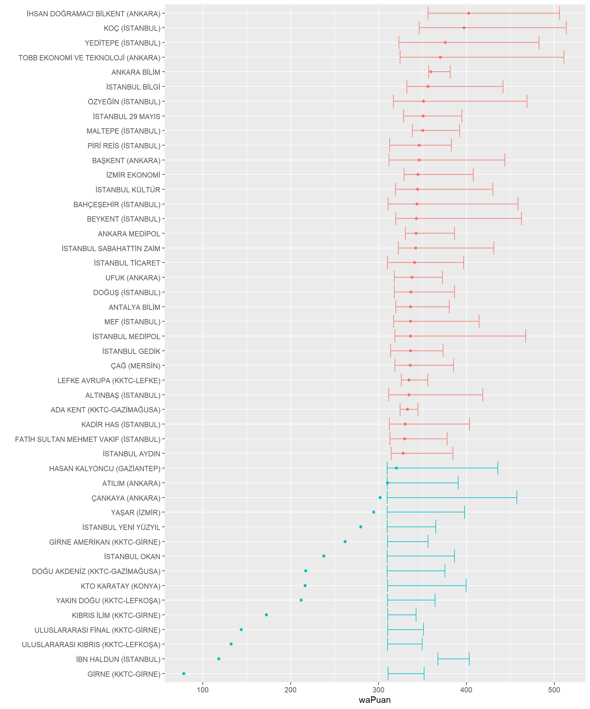

YKS Puanı Hesaplama Formülleri-2: Bölüm Bazlı Üniversite Sıralamaları
YKS
Üniversite Analitiği
Önceki yazıda YKS puanı hesaplanırken soru gruplarının katsayısını hesaplayan modellerin nasıl kurulacağı gösterildi Bu yazıda ise puan hesaplama bilgisinin üniversite analitiğinde nasıl kullanılabileceği tartışıldı.
Yazar
Raif Serkan Albayrak
Yayınlanma Tarihi
25 Haziran 2022
Bir önceki yazıda soru gruplarının puana etkilerinin nasıl hesaplanacağına yönelik temel regresyon modelleri geliştirildi. Bu katsayılar hesaplandığında soru gruplarının ağırlığının YKS kılavuzunda bahsedilenden farklı olduğu görüldü. Kılavuza göre Tablo 1E’ye göre TYT sınavının SAY, EA ve SÖZ puan türlerinde ağırlığı %40 olmalıdır. Ancak iki farklı bakış açısıyla yapılan incelemelerde bu oranın tutmadığı, yıldan yıla değiştiği ve bazı yıllarda ciddi ölçülerde sapmaların olduğu gösterildi. Tablo 1C ve Tablo 1E’deki alt tabloların tamamı için benzeri çalışmalar yapıldığında benzer sonuçlar elde edilecektir. Rehber öğretmenleri, danışmanları ve tabii ki öğrencileri, sınav taktikleri geliştirirken kullandıkları kılavızdaki bilgiler konusunda daha şüpheci olmaya davet ediyoruz.
Bu yazıda puan hesaplama formüllerinin/modellerinin üniversite analitiğindeki rolü üzerinde duruldu. YKS, üniversitelerin yaptıkları tüm çalışmaları sergilemek için yılda bir defa çıktıkları sahnedir. O sahnenin performans metrikleri üniversite analitiğinin temelini oluşturmaktadır. YKS sınav sonuçlarının analizinde üniversitelerin bölüm bazında sıralamalarını çıkarmak ve yıldan yıla bu sıralamaların nasıl değiştiğini incelemek üniversite yöneticileri için son derece önemlidir.
Ne var ki özellikle vakıf üniversiteleri söz konusu olduğunda bölüm bazında da olsa üniversite sıralamalarını çıkarmak hiç kolay değil. Birden fazla kontenjanla 1 öğrenci alan bölümler düşünüldüğünde sıralama işi zorlaşıyor. İşte puan hesaplama modelleri de tam da bu durumlarda yardımcı oluyor. Yazıda bölüm bazında bir üniversite sıralamasının nasıl yapılabileceği gösterildi.
Bölüm Bazlı Üniversite Sıralamaları
Bu bölümde üniversitelerin tüm faaliyetlerinden derlenen ulusal veya uluslararası derecelendirme endekslerinden değil YKS sonuçlarına göre bölüm bazlı sıralamalardan bahsediyoruz. Bölüm bazlı sıralamaların temel amacı şu soruya yanıt bulmaktır:
En başarılı öğrenciler hangi üniversiteleri tercih ettiler?
Sonuçta elde edilen sıralama elbette üniversiteleri ilgili bölümde yapılan tüm faaliyetler, akademik kadro, araştırmalar, projeler, eğitimin kalitesi, kampüs imkanları, mezunların ortalama maaşı gibi hiçbiri diğerinden değersiz olmayan bir çok boyutta mümkün olan en doğru, hassas ve güvenilir bir şekilde derecelendirme becerisine sahip olmayacak. Bu sıralama ile sadece üniversite tercihi yapan öğrenciler gözünde yapılan derecelendirme hesaplanıyor. Üniversite yöneticileri için bu derecelendirmede kurumlarının sırası ve yıllar bazında bu sıranın nasıl değiştiği çok önemli bir başarı kriteridir. Başarılı öğrencilerin tercihi olmak ilerki yıllarda daha da başarılı öğrencileri çekmenin yolunu açar. Üst düzey akademisyenler bu prestijli kurumlarda çalışmayı tercih edeceklerdir.
Buraya SONUÇTA elde edilen grafik ve tablolar gelsin
Teknik anlatımı daha anlaşılır kılabilmek amacıyla Hukuk bölümü örnek olarak kullanılmıştır. Kullanılan yöntemler diğer bölümler için de geçerlidir.
Veri
YÖK ATLAS portalında her üniversitenin her programı için derinlemesine analizlerin yapılmasına imkan sağlayan veri bulunmaktadır. Ne var ki portalda her kontenjan için yerleşen öğrencilerin ortalama puanı veya sıralaması bilgisi verilmemektedir. Eğer bu bilgilerden herhangi biri verilseydi, bölüm bazında üniversite sıralamalarına ulaşmak ağırlıklı ortalama hesaplamadan ibaret olacaktı. Ancak malesef ortalama bilgisine sadece yerleşen öğrencilerin ortalama YKS neti üzerinden ulaşmak mümkündür.
Herhangi bir üniversitenin Hukuk kontenjanlarındn birine girildiğinde sayfada yerleşenlerin net ortalamalarının olduğu bir sekme bulunmaktadır. Örneğin, İzmir Ekonomi Üniversitesi’nin Hukuk Fakültesi için 2021 yılı verisi incelendiğinde %100 Burslu ve %50 İndirimli kontenjanların olduğu görülmektedir. Buradan %50 İndirimli kontenjan sayfasına gidildiğinde Yerleşenlerin YKS Net Ortalamaları başlığı altında bu kontenjanla bölüme yerleşen öğrencilerin YKS net ortalamaları görülmektedir.
Yapılması gereken; ATLAS portalında bulunan tüm Hukuk kontenjanları için bu bilgiyi çekmek. İlk olarak bu yazı içinde gerekecek tüm kütüphaneler yükleniyor.
Kod
library(tidyverse)library(jtools)library(readxl)library(DT)library(summarytools)library(writexl)st_options(plain.ascii =FALSE, #summarytools parameter for Rmd documentsstyle ="rmarkdown",subtitle.emphasis =FALSE#improves layout w/ some themes )
ATLAS portalından alınan derlenmiş veri yükleniyor. Hukuk Fakülteleri EA puan türünde öğrenci kabul ettiği için EA soru grubunun netler verisi geliyor. Verinin tamamına buradan ulaşabilirsiniz.
Kod
hukuk <-read_excel("hukukNetlerW.xlsx")head(hukuk) |>datatable()
Verinin özet istatistiki bilgisi çıkarıldığında, toplam 169 adet farklı kontenjan olduğu, bunların 52’sinin DEVLET üniversitelerine ait olduğu görülüyor. Ayrıca oluşturulan raporda numerik değişkenler için temel istatistiki bilgiler de verilmiş durumda. Bu kısımlarda kullanılan IQR: Interquarile Range ve CV: Coefficient of Variation için kullanılan kısaltmalardır. SOn aşamada analize DEVLET üniversitesi dışındaki kontenjanlarda deva edileceği için filtreleme yapılıyor.
Generated by summarytools 1.0.1 (R version 4.2.1) 2022-07-31
Kod
hukuk <- hukuk[hukuk$Statu !="DEVLET",]
Analiz -1
Bu yazı dizisinin ilk gönderisinde farklı puan türleri için soru gruplarının puan üzerindeki ağırlıklarını hesaplayan modeller üretilmişti. Bu bölümde EA puan türü için üretilen modelin katsayıları kullanılarak Hukuk bölümlerinin kontenjanlarına yerleşen ortalama öğrencilerin puanları hesaplanacak.
Bu katsayılar kullanılarak ortalama netlerden puan hesabına gidildiğinde, her kontenjana yerleşenlerin ortalama puanı hesaplanmış olur. Bu aşamada gözden kaçan bir hata olup olmadığını kontrol etmek maksadıyla tam verisine erişim imkanımızın olduğu İzmir Ekonomi Üniversitesinin Hukuk Fakültesi Burslu kontenjanına yerleşen öğrencilerin ortalama puanları kontrol ediliyor. Turuncu çizgi yerleşenlerin puanlarının ortalaması 380.15 puan. Kırmızı renk ise ortalama netlerin puanı 377.38. Farkın nedeni ATLAS sayfasında ortalama netlerdeki yuvarlama. Grafikte ön planda yer alan Box-Whiskers grafiğinde bu kontenjana yerleşen öğrencilerin puanlarının dağılımı görülüyor. Arka planda ise aynı verinin yoğunluk dağılımı açık gri renkle gösterilmiştir. Medyan değerin konumudağılımın şeklinden tahmin edileceği ve Box-Whiskers’tan da görüleceği üzere ortalamanın sağında.
Herhangi bir kontenjana yerleşen öğrencilerin puanlarının dağılımının genel karekteristiğinin yukarıdaki grafikteki forma uyduğunu söylemek yanlış olmaz. Aynı bölümün %50 İndirimli kontenjanına yerleşen öğrencilerin puan dağılımında da sağa çarpıklık görülmekte.
En başarılı öğrenciler hangi üniversiteleri tercih ediyor? Aşağıdaki listede Hukuk fakültelerine son sırada yerleşen öğrencilerin puanına göre sıralanmış 15 vakıf üniversitesi bulunuyor. Sıralama amaçlı hemen her listenin bu mantıkla, yani son sırada yerleşen öğrencinin puanına göre oluşturulduğunu görüyoruz. Bu liste hem anlaşılır hem de hiçbir hesaplama gerek kalmadan hızlıca hazırlanabilir. Ancak bu paragrafın başındaki soruya tatmin edici bir yanıt olduğunu söylemek zor.
İbn Haldun Üniversitesi’nin listede Başkent’in üzerinde olduğu görülüyor. Ancak kontenjanlara ilk yerleşenlerin puanlarına bakıldığında Başkent’e yerleşenin puanı 443.6, İbn Haldun’a yerleşenin ise 402.9. Dolayısıyla İbn Haldun’a daha başarılı öğrencilerin yerleştiğini söyleyemeyiz. Zaten kontenjana yerleşenlerin ortalama netlerinden hesaplanan puana bakıldığında Başkent’e yerleşen öğrencilerin ortalamada İbn Haldun’a yerleşenlerden daha başarılı oldukları görülüyor. Benzer şekilde Çankaya da aslında listede Kadir Has ve İstanbul Medipol’ün üzerinde olmalıdır. Dolayısıyla üniversiteler arasında başarı sıralaması yapmak için ortalama puanları hesaplayıp ona göre listelemek gerekmektedir.
Kod
knitr::kable(hukuk[1:15,c(11,12,14,15,16,17,18)])
Uni
Burs
minP
maksP
kont
yer
ortP
KOÇ ÜNİVERSİTESİ (İSTANBUL)
Burslu
487.2921
513.4589
19
19
499.4900
İHSAN DOĞRAMACI BİLKENT ÜNİVERSİTESİ (ANKARA)
Burslu
474.6441
505.9713
24
24
483.4182
TOBB EKONOMİ VE TEKNOLOJİ ÜNİVERSİTESİ (ANKARA)
Burslu
462.3444
510.8920
15
15
476.1470
YEDİTEPE ÜNİVERSİTESİ (İSTANBUL)
Burslu
451.5143
482.3345
16
16
461.1074
ÖZYEĞİN ÜNİVERSİTESİ (İSTANBUL)
Burslu
440.4008
468.9003
28
28
452.3481
İHSAN DOĞRAMACI BİLKENT ÜNİVERSİTESİ (ANKARA)
%50 İndirimli
439.3672
469.6028
16
16
452.5134
BAHÇEŞEHİR ÜNİVERSİTESİ (İSTANBUL)
Burslu
411.9706
458.5285
22
22
425.3234
İSTANBUL BİLGİ ÜNİVERSİTESİ
Burslu
409.6576
441.5863
22
22
419.2863
ALTINBAŞ ÜNİVERSİTESİ (İSTANBUL)
Burslu
399.9048
418.4527
3
3
402.2836
İBN HALDUN ÜNİVERSİTESİ (İSTANBUL)
Burslu
394.0550
402.9876
10
10
398.1802
BAŞKENT ÜNİVERSİTESİ (ANKARA)
Burslu
392.3307
443.6617
23
23
399.1558
MEF ÜNİVERSİTESİ (İSTANBUL)
Burslu
385.6659
414.1197
20
20
395.4435
KADİR HAS ÜNİVERSİTESİ (İSTANBUL)
Burslu
384.9959
403.4350
24
24
387.9648
İSTANBUL MEDİPOL ÜNİVERSİTESİ
Burslu
376.3495
467.4792
29
29
384.8400
ÇANKAYA ÜNİVERSİTESİ (ANKARA)
Burslu
376.1914
457.4441
23
23
390.7406
Sıralama ile ilgili ikinci problem ise aynı bölüme birden fazla kontenjanla öğrenci alınması durumunda ortaya çıkıyor. Her ne kadar kontenjanlar farklı olsa da, yerleşen öğrenciler sonuç itibariyle aynı bölüme yerleşmekte, öğrenciler aynı sınıflarda eğitim görektedir. Dolayısıyla sıralamalar kontenjanlar üzerinden değil, bölümler üzerinden hesaplanmalıdır. Aşağıdaki tabloda Koç ve Bilkent üniversitelerinin farklı kontenjanlara göre aynı bölüme aldıkları öğrencilerle ilgili puan bilgisi verilmiştir. Üniversite sıralamasında örneğin Koç Üniversitesi için kullanılması gereken ortalama puanı bulmak için hem burslu hem de ücretli kontenjanlara yerleşen öğrenciler hesaba katılmalıdır. Bu kontenjanlara yerleşen öğrenci sayıları farklı olduğuna göre kontenjanlarla ağırlıklandırılmış ortalama hesaplamak gerekmektedir. Bilkent için ise üç kontenjan bulunmaktadır ve bu üç kontenjana yerleşen öğrencilerin tamamının puanları ortalama puan hesaplarken kullanılmalıdır.
Bu aşamada ağırlandırmayı yerleşen öğrenci sayısıyla yapmak ancak son aşamada toplam ağırlığa bölerken toplam yerleşen yerine toplam kontenjanı kullanmak gerekmektedir. Dolmayan kontenjanları “cezalandırmak” için bu yaklaşım daha doğru olmaktadır.
\[
A. \: Ortalama=\frac{\displaystyle\sum\limits_{i=1}^k ortP(i)*yer(i)}{\displaystyle\sum\limits_{i=1}^k kont(i)}=\frac{\displaystyle\sum\limits_{i=1}^k wsum(i)}{\displaystyle\sum\limits_{i=1}^k kont(i)}
\] Formülde \(k\) üniversitenin ilgili bölümde kaç farklı kontenjanı varsa (en fazla 3 olabilir) onu göstermektedir. Her üniversite için bu işlemler yapıldığında istenen bölüm2 bazında üniversite sıralaması elde edilmiş olur.
İlk tabloya göre oldukça fazla yer değiştirmenin olduğu gözlerden kaçmayacaktır. Örneğin sıralamanın başındaki üniversite yer değiştirdi. Ortalamada en başarılı öğrencilerden oluşan sınıf Bilkent’te oluşmuş. Koç Ü. yakın takipte. Üçüncü sırada olan Yeditepe, TOBB’la yer değiştirmiş. Ankara Bilim’i aslında bu sıralama dışı tutmak gerekli çünkü sadece burslu kontenjandan öğrenci alıyor.
Tabloyu grafikle özetlemek de mümkün. Kırmızı renkle gösterilen üniversitelerin kontenjanları dolmuştur. Her üniversitenin Hukuk Fakültesi için farklı kontenjanlar havuzlandıktan sonra en küçük puan ve en büyük puan arasında bir hat çekilmiştir. Ortalama puanlar ise bir nokta şeklinde gösterilmektedir. Dolmayan bölümler için ortalama puanın en küçük puanın altında hesaplanabildiği görülmektedir. Bu anlamda ortalama puanın aslında bölüm bazında üniversite sıralaması yapabilmek için oluşturulan geçici ya da enstrumental bir değişken olduğunu vurgulamak isteriz.
Kod
# reorder() kullanılmazsa Y ekseni uni isimlerine göre sıralanıyor. # gsub() ile y eksenindeki universite isimlerini kısaltıyorum.ggplot(rankHukuk,aes(waPuan,reorder(gsub(" ÜNİVERSİTESİ", "", Uni),waPuan),color=factor(kont>yer)))+geom_point()+geom_errorbarh(aes(xmin=minP,xmax=maxP))+labs(y="")+theme(legend.position="none")

Analiz-2
Son olarak bu bölümde ATLAS platformunda ortalama net verisi açıklanmadan önce bu sıralamayı tahmin etme yöntemleri tartışıldı. ATLAS verisi her yılın sonuna doğru hesaplanmakta, ancak YKS sonuçlarının değerlendirmesine yönelik raporlar ise bu tarihlerden bir kaç ay önce tamamlanmaktadır. Vakıf yöneticileri her bölüm için hazırlanan sıralamaları inceleyerek yaptıkları yatırımların, verdikleri kararların sonucunda vakıf üniversiteleri arası rekabette nerede konumlandıklarını görebilmek isterler. Bu raporlar yıllara sari hazırlandığında oluşan trendler ve rekabet dinamikleri incelenebilmekte, aksiyon planlarına yönelik ipuçları bulunabilmektedir.
Yerleşen öğrencilerin puan dağılımının alttan ve üstten sınırlı olması ve karekteristik form nedeniyle log-uniform dağılıma benzediği söylenebilir.Başkent, İstanbul Medipol ve Çankaya üniversitelerinde olduğu gibi ortalamanın çok üzerinde bir tavan puanla programa yerleşmenin olmadığı durumlarda bu dağılımın momenti (ortalaması) kullanılarak tahmin yapılabilmektedir.
Hukuk verisi üzerinde tüm kontenjanlara yerleşen öğrencilerin sadece taban ve tavan puanlarını kullanarak ortalama puanı hesaplayan basit bir regresyon modeli kurulabilir. Ortalama puanlar daha önce de anlatıldığı üzere ATLAS platformunda kontenjan bazında verilen ortalama netler kullanılarak hesaplandı. Modelde kasıtlı olarak sabit değer sıfırlandı. Modelin genel olarak performansının çok yüksek olduğu (%99.99) görülmektedir.
Call:
lm(formula = ortP ~ -1 + minP + maksP, data = hukco)
Residuals:
Min 1Q Median 3Q Max
-10.2072 -2.3007 -0.0932 1.8358 10.8858
Coefficients:
Estimate Std. Error t value Pr(>|t|)
minP 0.81776 0.01383 59.13 <2e-16 ***
maksP 0.18672 0.01258 14.84 <2e-16 ***
---
Signif. codes: 0 '***' 0.001 '**' 0.01 '*' 0.05 '.' 0.1 ' ' 1
Residual standard error: 3.178 on 115 degrees of freedom
Multiple R-squared: 0.9999, Adjusted R-squared: 0.9999
F-statistic: 7.26e+05 on 2 and 115 DF, p-value: < 2.2e-16
Hata terimleri de incelendiğinde modelin taban ve tavan puan kullanarak yaptığı ortalama puan hesaplamasının oldukça başarılı olduğu görülüyor. Parametrelere bakıldığında modelin hesapladığı ortalama değer taban ve tavan puan arası beş eşit dilime bölündüğünde taban puandan bir dilim uzaklıkta.
Modelin başarısının bağımlı değişken olan ortalama puanın, bağımsız değişken olan taban ve tavan puanlara yakın olması ve sapmaların değerlerin sayısal büyüklüğüne oranla düşük olmasından kaynaklanmadığını görmek için bir standardizasyon işlemi yapılıyor. Taban ve tavan puan değerleri birleştirilip ortalama ve standart sapma hesaplandıktan sonra, tavan, taban ve ortalama puanlar bu değerler kullanılarak standardize ediliyor. Yeni hesaplanan değişkenlerle bir öncek model kuruluyor. Bu modelin başarısı da %99’un üzerinde ve parametreler yaklaşık aynı çıkıyor.
Call:
lm(formula = sort ~ -1 + smin + smax, data = hukco)
Residuals:
Min 1Q Median 3Q Max
-0.26701 -0.03137 0.01859 0.06010 0.19371
Coefficients:
Estimate Std. Error t value Pr(>|t|)
smin 0.791378 0.009082 87.14 <2e-16 ***
smax 0.221861 0.007736 28.68 <2e-16 ***
---
Signif. codes: 0 '***' 0.001 '**' 0.01 '*' 0.05 '.' 0.1 ' ' 1
Residual standard error: 0.07295 on 115 degrees of freedom
Multiple R-squared: 0.9934, Adjusted R-squared: 0.9932
F-statistic: 8608 on 2 and 115 DF, p-value: < 2.2e-16
Ek olarak yerleşmeyenin %100 olmadığı kontenjanlar için dummy değişken tanımlanıp, moderasyon ilişkisi de incelendi ve b faktörlerin model içinde anlamlı bir katkılarının olmadığı gözlemlendi.
Sonuç
Herhangi bir bölüm için üniversite sıralamaları hesaplanmak istendiğinde genel olarak kontenjanların taban puanları esas alınmaktadır. Vakıf üniversitleri açısından hemen her bölüm için birden fazla kontenjan olduğu düşünüldüğünde de kontenjanlarla ağırlıklandırılmış ortalamalar hesaplanmaktadır. Bu yazıda sıralama amacıyla taban puan kullanmanın üniversiteler arasındaki sıralamalarda hatalı sonuçlar ürettiği gösterildi. Buna göre taban yerine ortalama puan kullanmak gerekmektedir. Ancak her kontenjan için ortalama puan hesaplamak oldukça zordur ve bu hesap için kullanılan ATLAS platformu verisinin yayınlanması aylar sürmektedir. Ayrıca net ortalamalarından ortalama puan hesabı yapabşilmek te ayrı bir alet kutusu gerektirmektedir.
Üniversiteler kendi kontenjanlarına yerleşen öğrencilerin puan verisine sahiptirler. Bu veri incelendiğinde, kontenjan bazında, yerleşen öğrencilerin dağılımları log-uniform dağılımı karekteristikleri göstermektedir. Buradan yola çıkarak, sadece taban ve tavan puan kullanılarak ortalama puanı tahmin eden bir model geliştirildi. Model mevcut veriyi %99’un üzerinde bir başarıyla açıklayabilmekte. Dolayısıyla, ATLAS platformu verisi kullanmadan ortalama puan tahminleri yapmak mümkündür.
Dipnotlar
Örneğin Burslu ve %50 İndirimli kontenjanla öğrenci alan↩︎
Altınbaş Ü için Hukuk’ta iki farklı bölüm (Standart ve UOLP-Köln) var ancak ayırma zahmetine girmiyoruz.↩︎